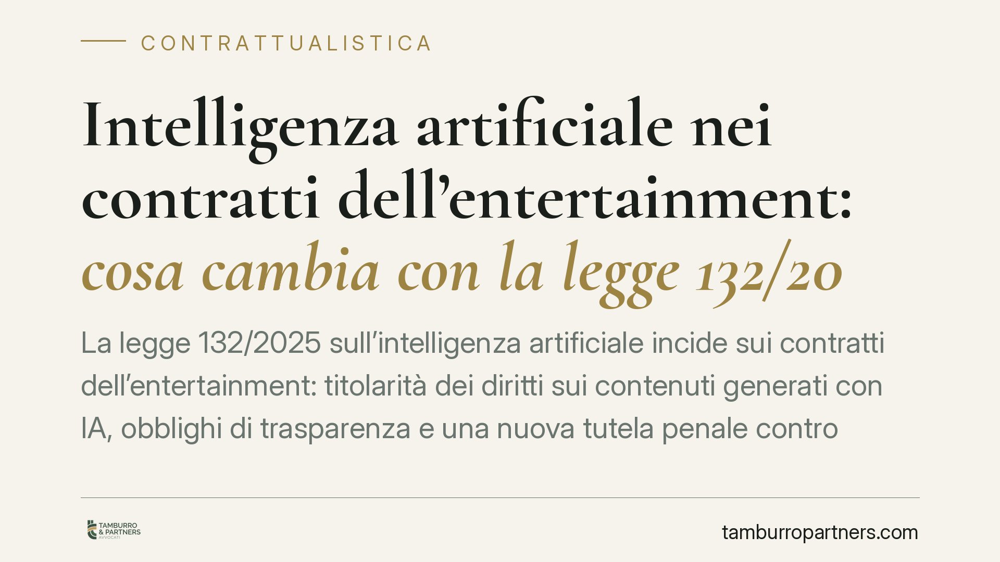

Intelligenza artificiale nei contratti dell'entertainment: cosa cambia con la legge 132/2025
La legge 132/2025 sull'intelligenza artificiale incide sui contratti dell'entertainment: titolarità dei diritti sui contenuti generati con IA, obblighi di trasparenza e una nuova tutela penale contro i deepfake. Per produttori, editori, autori e artisti cambia la struttura stessa degli accordi. Vediamo cosa è certo, cosa attende i decreti attuativi e come muoversi da subito.

Il contesto
La legge 23 settembre 2025, n. 132, detta i principi nazionali in materia di intelligenza artificiale e produce effetti diretti sulla contrattualistica dei settori creativi. L'impatto si gioca su due piani distinti, che è bene non confondere: quello civile-contrattuale (chi è titolare di cosa, quali obblighi informativi gravano sulle parti) e quello penale (le condotte ora sanzionate).
La distinzione è operativa: una clausola contrattuale ben scritta riduce il contenzioso civile, ma non copre da sola i profili di responsabilità penale, che seguono regole proprie.
Inquadramento normativo
Sul piano dell'autorialità, resta fermo il principio dell'art. 1 della legge sul diritto d'autore (l. 633/1941): la protezione presuppone un'opera dell'ingegno di carattere creativo riconducibile a una persona. Un output puramente generato da una macchina, senza apporto creativo umano identificabile, resta di collocazione incerta. Da qui l'esigenza, nei contratti, di documentare l'apporto umano e di regolare espressamente la titolarità dei risultati.
Sul fronte dell'estrazione di testo e dati (il cosiddetto *text and data mining*, cioè l'analisi automatizzata di grandi quantità di contenuti per addestrare i sistemi), la disciplina italiana è contenuta negli artt. 70-ter e 70-quater l.d.a., introdotti in attuazione della Direttiva UE 2019/790. Sono queste le norme rilevanti quando un contratto deve chiarire se e come i contenuti possano essere usati per addestrare modelli, e con quali eventuali riserve del titolare dei diritti.
Quanto al piano penale, la legge 132/2025 rafforza la tutela contro la diffusione di contenuti sintetici ingannevoli — i deepfake, ossia immagini, video o audio alterati o generati con IA e presentati come reali. La collocazione esatta della fattispecie nel codice penale va verificata sul testo definitivo pubblicato in Gazzetta Ufficiale: su questo punto raccomandiamo prudenza, evitando di riferirsi a un numero di articolo prima del riscontro sulla fonte primaria. Ciò che conta, ai fini pratici, è che la produzione e diffusione non autorizzata dell'immagine o della voce altrui in forma alterata assume rilievo penale autonomo, oltre ai profili risarcitori già noti.
Implicazioni pratiche
Per chi produce e distribuisce opere, le conseguenze sono concrete.
Titolarità e catena dei diritti. Il contratto deve dire, senza ambiguità, chi è titolare dei contenuti realizzati con l'ausilio di sistemi di IA e chi risponde in caso di contestazione da parte di terzi. In assenza di clausola, il rischio è che la titolarità resti contesa e che il deposito presso la SIAE — passaggio ordinario nella filiera — poggi su basi fragili.
Trasparenza. La legge spinge verso l'obbligo di segnalare quando un contenuto è generato o alterato con IA. Questo si traduce in dichiarazioni e garanzie (le *representations & warranties*) da inserire negli accordi tra produttore, autore e artista.
Tax credit audiovisivo. Circolano interpretazioni secondo cui il credito d'imposta sarebbe subordinato al rispetto dei nuovi obblighi di trasparenza sull'IA. Va detto con chiarezza: al momento questo legame non è confermato e dipenderà dai decreti attuativi. È prudente monitorarne l'evoluzione, senza costruire operazioni su un presupposto non ancora certo.
Depositi SIAE. Il deposito continua a fondarsi sulla riferibilità dell'opera a un autore. Quando l'IA interviene nel processo creativo, occorre poter dimostrare l'apporto umano: la documentazione contrattuale diventa parte della difesa del diritto.
Cosa fare in concreto
- Rivedete i contratti standard inserendo una clausola espressa su titolarità e garanzie per i contenuti realizzati con IA.
- Introducete obblighi di disclosure reciproci: ciascuna parte dichiara se e come ha utilizzato sistemi di IA, con manleva a carico di chi omette.
- Documentate l'apporto umano in ogni fase creativa (bozze, revisioni, decisioni autoriali), a supporto del deposito SIAE e della titolarità.
- Regolate il *text and data mining*: chiarite se i contenuti possono essere usati per addestrare modelli, richiamando la riserva dei diritti ex artt. 70-ter e 70-quater l.d.a.
- Adottate una policy anti-deepfake: consenso scritto e specifico per l'uso di immagine e voce, con clausole sulle conseguenze in caso di alterazione non autorizzata.
Restiamo in attesa dei decreti attuativi, che definiranno il dettaglio tecnico degli obblighi. Consigliamo di aggiornare la modulistica contrattuale senza attendere, poiché i principi generali sono già operativi e il contenzioso su questi temi è destinato a crescere.
---
Contributo informativo a cura di Tamburro & Partners - Avv. Giuseppe Tamburro. Non costituisce parere legale.
Ogni contratto ha il suo equilibrio.
Se vuoi una revisione delle clausole o una redazione su misura, scrivi allo studio. Ti rispondiamo entro un giorno lavorativo.